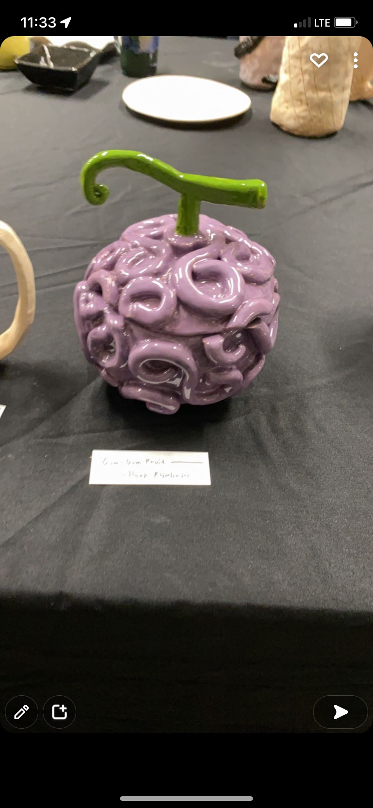
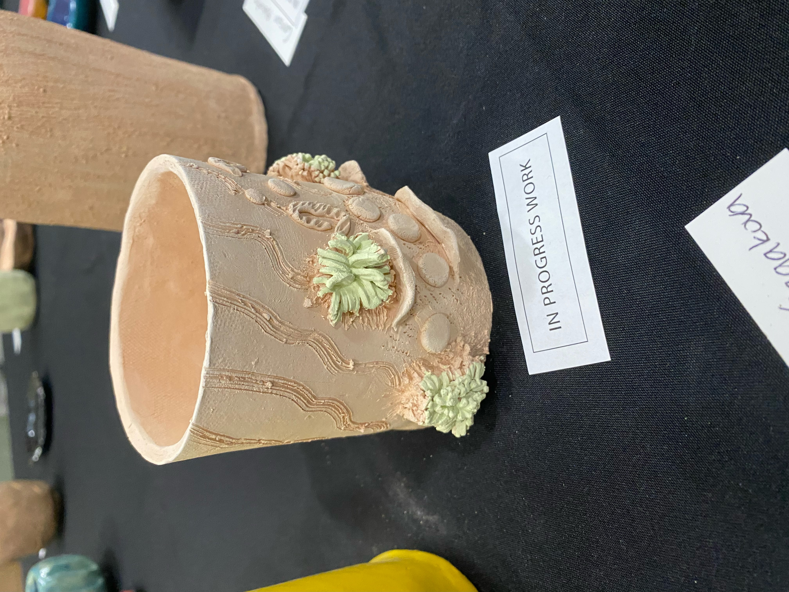

3:45
The bell rang and I called my mom so she could pick me up. Fifteen minutes later I was at home and in front of my computer, fixing an error in our backend code that our backend developer, Vyaan Guatem, could not figure. After 20 minutes of banging my head against the table, I spotted the error, a missing semicolon.
5:00
I was eating dinner when the scrum master, Nikhil Chakavartula, called me. Nikhil Chakavartula said that we f-ed up. We were supposed to put our project on another separate fastpages but rather, we put it on out website. When I heard Nikhil Chakavartula say that, my shoulders were filled with 20 pound blinks of tungsten, the heaviest metal known to men. I put my put my thumb between the screen and the keyboard of my laptop and flung it open. I quickly navigated to the fastpage github page and cloned the repository. There was one minor problem, I had forgotten how to make a fastpage because it had been 12 weeks since the other one I made. I quickly and carefully followed the directions but as soon as i looked up to the clock up on my wall, it was 6:30.
6:30
I paddled the fast as i could so i would not be late. i was using all of the power left on my legs to bike uphill. as i reached the front of the school, i saw out frontend developer, Qais Jamili. Qais Jamili was waiting for the rest of us. I explained to Qais Jamili what Nikhil Chakavartula had said to me earlier. Qais Jamili banged and smashed his head on the concreate floor out of desperation until i stopped Qais Jamili. as soon as i stopped him, Nikhil Chakavartula and Vyaan Guatem showed up. We went in our designated room and set up our project. we were the black ducklings amongst the yellow ones.

7:00
Our Teacher, Mr Yueng, came up with a clipboard and wanted to check and grade our assignment. I pressed play on the code and the Hangman appeared on the screen. Nikhil Chakavartula entered letters and said words that explained the code to Mr Yeung. Mr Yueng nodded his head in approval and said “good job.” We asked him if we could leave and he said we could leave after we check out some of the other classes artwork. I agreed and went around with Qais Jamili to check out other artwork from other classes. i saw one artwork from ceramics class that caught my eye. i was supposed to take a picture of an artwork and critique it for another class. i turned to Qais Jamili and demanded him to take a picture with his phone and sent to me as i forgot my phone in the rush i was in. Qais Jamili agreed and took a picture. Qais Jamili and I walked to the front door and shaked goodbye. “I would see Qais Jamili in 12 hours” I said as I held back my tears. out of frustration, I punched Qais Jamili in the face and hopped on my bike and went home. 